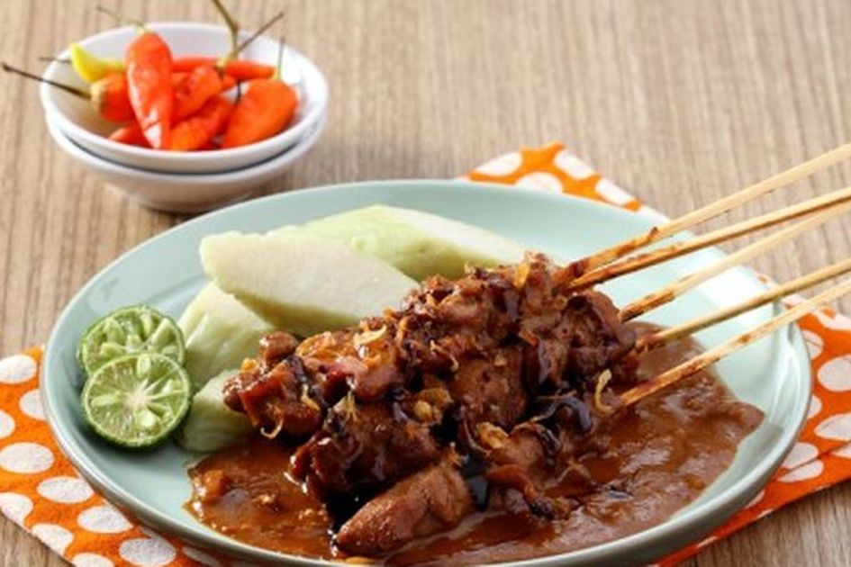
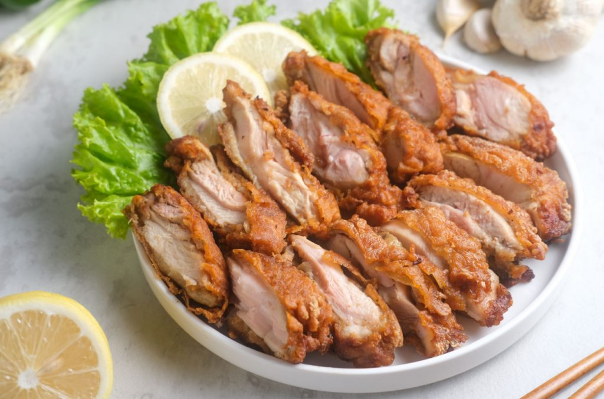
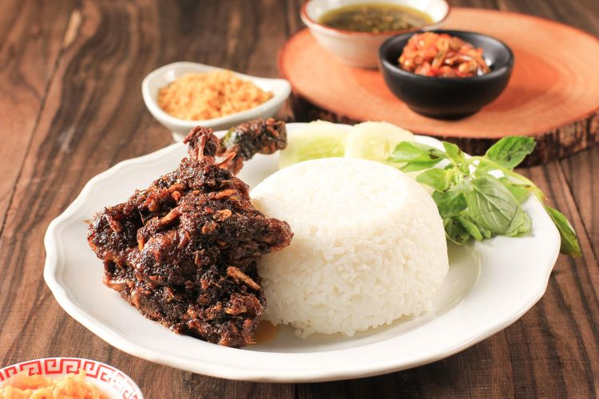

Resep Sate Ayam


Resep Ayam Bawang

Resep Nasi Bebek

Resep Nasi Goreng
Apa pendapatmu tentang rawon?
Rawon adalah sup daging khas Jawa Timur yang terkenal dengan kuahnya yang hitam pekat dari kluwek. Apakah kamu sudah mencobanya? Bagaimana cara terbaik untuk menikmatinya?
Apa pendapatmu tentang makanan pedas?
Saya percaya bahwa makanan pedas meningkatkan cita rasa dan membuat pengalaman makan lebih menarik. Bagaimana denganmu?
Rekomendasi makanan khas daerahmu?
Apa makanan khas daerahmu yang wajib dicoba? Saya sedang mencari rekomendasi untuk perjalanan berikutnya!